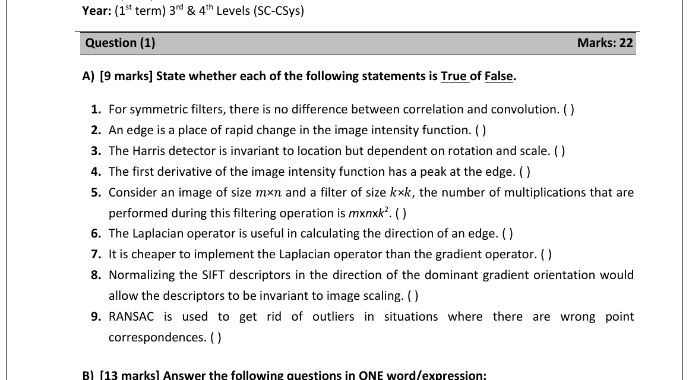
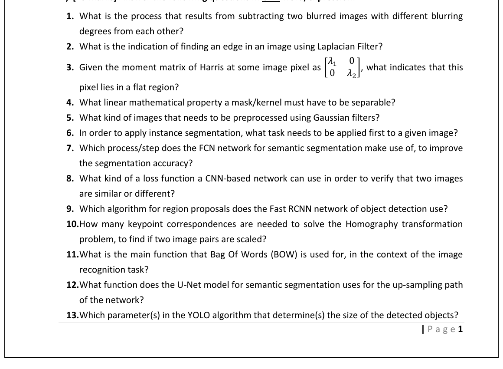

Question 1 — Theory (T/F + short-answer, 22 marks)
Q1·A — True/False (9 marks)

True / False — with one-liner reasoning
For T/F on filtering theory: anchor each statement to the one fact that pins it. "Symmetric kernel" ↔ convolution=correlation. "Edge" ↔ first-derivative peak / second-derivative zero-crossing. "Harris" ↔ invariant to translation & rotation, not scale. "Laplacian" ↔ magnitude only (no direction).
- True — symmetric kernels give the same answer either way; flipping doesn't change a symmetric mask.
- True — that's the definition of an edge: a place where the intensity function changes sharply.
- False — Harris is invariant to translation and rotation only. It is not scale-invariant (and that's the whole reason SIFT exists).
- True — first derivative has a peak at the edge; the second derivative zero-crosses there.
- True — one output pixel costs k² multiplies, and there are m·n output pixels.
- False — the Laplacian only gives magnitude. To get edge direction you need the gradient (Sobel/Prewitt).
- True — the Laplacian is one convolution; the gradient operator needs two (∂/∂x and ∂/∂y) and then a magnitude — strictly more compute.
- False — normalising along the dominant gradient direction gives rotation invariance, not scaling. Scale invariance comes from SIFT's scale-space pyramid.
- True — that's literally what RANSAC is for: throw away the wrong correspondences before fitting.
Q1·B — One-word/expression (13 marks)

13 one-word answers — pin each to a single concept
These are all "name the technique" questions. Each one anchors to a single named idea from L05–L12. If a word fits in one sentence, that's the answer.
- Process that results from subtracting two blurred images at different σ → Difference of Gaussians (DoG). That's exactly how SIFT builds its scale pyramid.
- Indicator that a Laplacian-filtered pixel is on an edge → Zero-crossing. The Laplacian goes from + to − across an edge, so the edge is where it crosses zero.
- Harris moment matrix with $\lambda_1\!=\!\lambda_2\!=\!0$ ⇒ which region? → Flat region. Both eigenvalues zero ⇒ no intensity change in any direction.
- Linear mathematical property a mask/kernel must have to be separable → Rank 1 (equivalently, can be written as the outer product of a column and a row). The instructor's keyword: "separable ⇒ outer-product / rank-1".
- What kind of images need to be pre-processed using a Gaussian filter? → Noisy images. Gaussian = blur = denoise before differentiation.
- For instance segmentation, what task can be applied first? → Object detection. Mask R-CNN is literally "Faster R-CNN + a mask head" — detect first, then segment.
- Which process/step does the FCN network use, to improve the segmentation accuracy? → Skip connections (a.k.a. skip-fusion of pool3/pool4 with the upsampled output). They restore fine spatial detail.
- What kind of loss function a CNN-based net can use to verify two images are similar or different? → Triplet loss (or contrastive loss — both accepted; Yassin marked "Triplet Loss").
- Which algorithm for region proposals does Fast R-CNN use? → Selective search. (Faster R-CNN replaces it with the RPN — but the question is Fast R-CNN.)
- How many keypoint correspondences are needed to solve the homography transformation when two image pairs are scaled? → 4 point pairs. A homography has 8 DOF; each match gives 2 equations ⇒ need 4 matches.
- Main function of BoW (Bag of Words) for image recognition → Simplifying object representation / classification. It throws away spatial layout and keeps a histogram of visual words.
- What function does the U-Net model for semantic segmentation use for the up-sampling path of the network? → Skip connections (from each encoder block to the matching decoder block — the U-shape).
- Which parameter(s) in YOLO determines the size of the detected objects? → Anchor boxes (their widths & heights). Anchors are the priors for object sizes/ratios.
📚 L05 — DoG/Harris/SIFT, L09 — Fast R-CNN, L10 — RPN & anchors, L11 — Semantic segmentation (FCN/U-Net), L12 — Mask R-CNN.